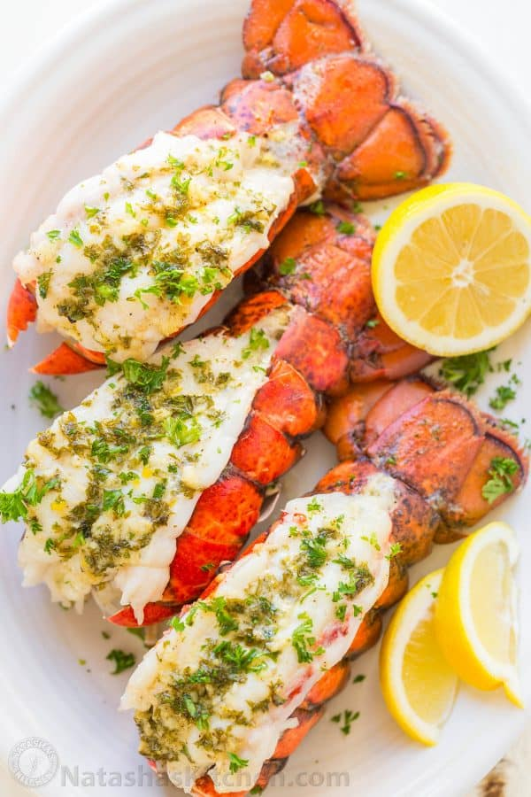

Description
This is the only Lobster tails recipe you’ll ever need and it’s surprisingly easy! The broiled lobster meat is crazy tender, juicy and each bite is tantalizingly flavorful, especially after dipping into the warm garlic lemon butter. Dunk it in, take it for a swim, watch the excess drip off your fork and enjoy.
Ingredients
- 4 lobster tails (5 to 6 oz each)
- 1 Tbsp fresh parsley, very finely chopped, plus more for garnish
- 2 garlic cloves, pressed
- 1 tsp dijon mustard
- 1/4 tsp salt
- 1/8 tsp black pepper
- 1 1/2 Tbsp olive oil
- 1 1/2 Tbsp fresh lemon juice
- 4 Tbsp unsalted butter, divided
Steps
- Place rack in center of oven so when you bake, the meaty tops of your lobster tails will be at least 6 inches from the top heating elements. Preheat oven to broil on high heat.
- In a small bowl, add the marinade ingredients: 1 Tbsp parsley, 2 pressed garlic cloves, 1 tsp dijon, 1/4 tsp salt, 1/8 tsp pepper, 1 1/2 Tbsp olive oil and 1 1/2 Tbsp lemon juice. Stir to combine.
- Place butterflied Lobster Tails into a 9×13 or 8×12 roasting pan. Divide the marinade evenly over the tops of each lobster tail and dot each tail all over with 1/2 Tbsp of butter cut into smaller pieces.
- Broil lobster tails on high 10-11 minutes (or according to the lobster tail size – see chart below). When done, lobster meat should be opaque and white in the center and register 145°F on an instant read thermometer. Transfer lobster tails to a serving platter and garnish with fresh parsley if desired.
- To make the Garlic Lemon Butter: drain drippings from the roasting pan into a small saucepan and combine with remaining 2 Tbsp butter, bring to a simmer and remove from heat. Pour over lobster tails or divide into small ramekins and use as dipping sauce.